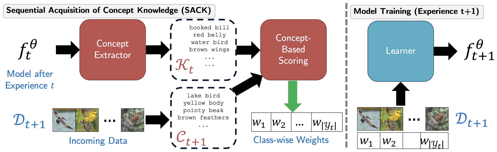
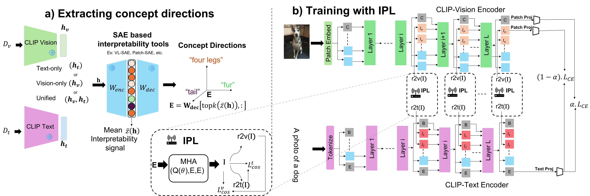
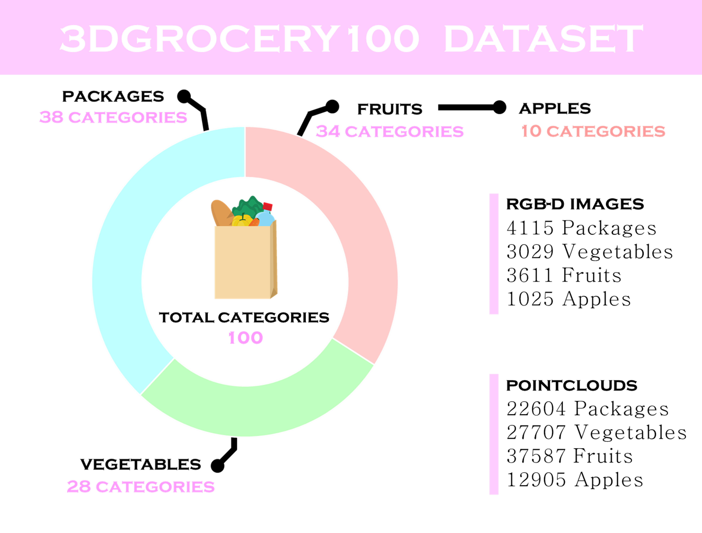
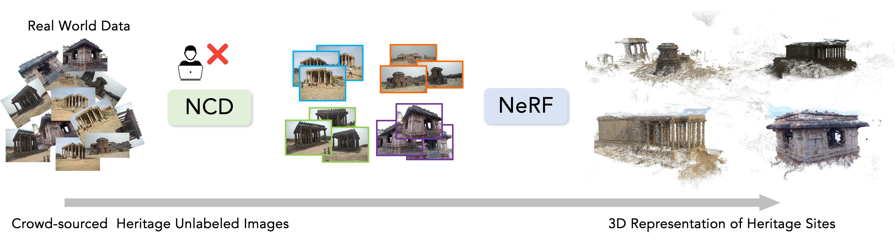
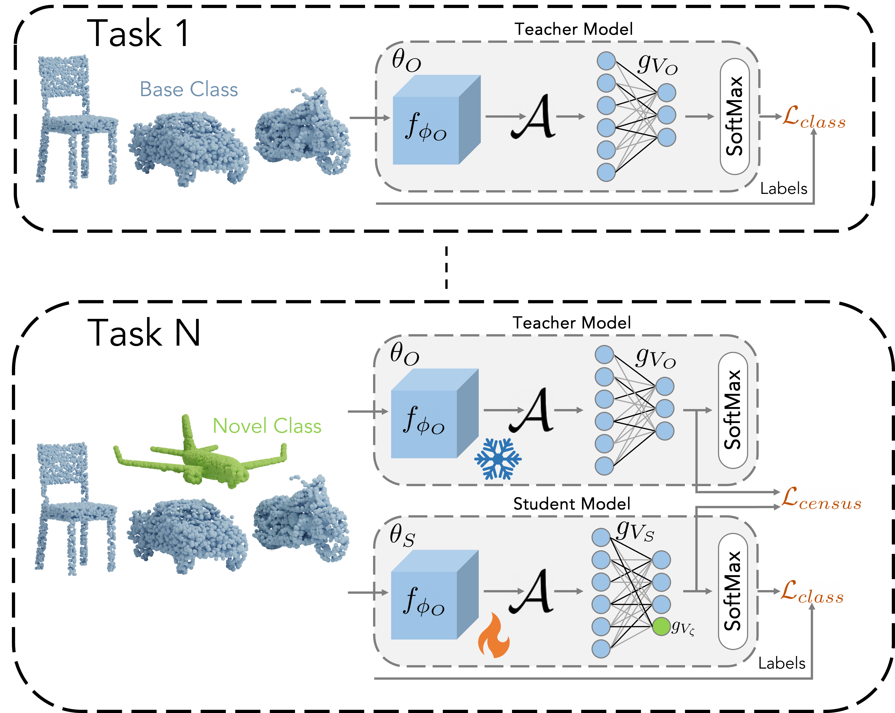

Shivanand Kundargi
Home
Publications
Notes
Contact
Accessibility
Reset
Theme
☀️ Day
🌙 Night
Text Size
100%
115%
130%
High Contrast
Underline Links
Reduce Motion
Selected Publications
2026

SACK: Sequentially Acquiring Concept Knowledge to Guide Continual Learning
Shivanand Kundargi
, Kowshik Thopalli,
Tejas Gokhale
Conference on Lifelong Learning Agents (CoLLAs), 2026
Paper
Code
Project
BibTeX

On the Role of Mechanistic Interpretability for Vision-Language Prompt Learning
Shivanand Kundargi
, Ziwei Zhang, Kowshik Thopalli,
Tejas Gokhale
ICML Workshop on Mechanistic Interpretability, 2026
Paper
Code
Project
BibTeX
2025
Sequentially Acquiring Visual Concepts for Continual Learning
Shivanand Kundargi
, Kowshik Thopalli,
Tejas Gokhale
Workshop on Visual Concepts @ CVPR, 2025
Paper
Code
Project
BibTeX
2024

A benchmark grocery dataset of real-world point clouds from single view
Shivanand Sheshappanavar, Tejas Anvekar,
Shivanand Kundargi
, Yufan Wang, Chandra Kambhamettu
International Conference on 3D Vision (3DV), 2024
Paper
Code
Project
BibTeX

Novel class discovery for representation of real-world heritage data as neural radiance fields (student abstract)
Shivanand Kundargi
, Tejas Anvekar, Ramesh Tabib, Uma Mudenagudi
Proceedings of the AAAI Conference on Artificial Intelligence, 2024
Paper
Code
Project
BibTeX
2023

PointCLIMB: An exemplar-free point cloud class incremental benchmark
Shivanand Kundargi
, Tejas Anvekar, Ramesh Tabib, Uma Mudenagudi
CLVision workshop @ CVPR, 2023
Paper
Code
Project
BibTeX